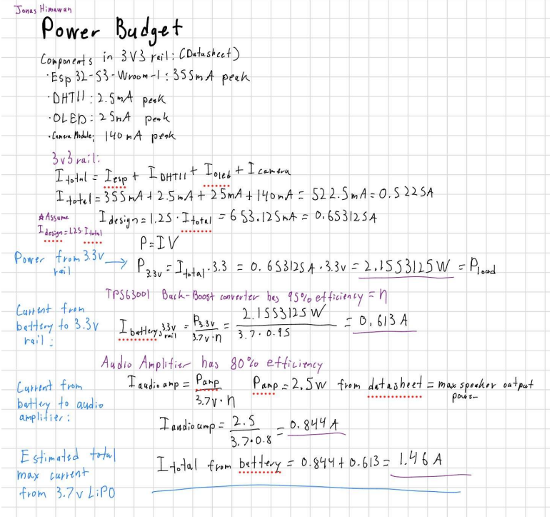
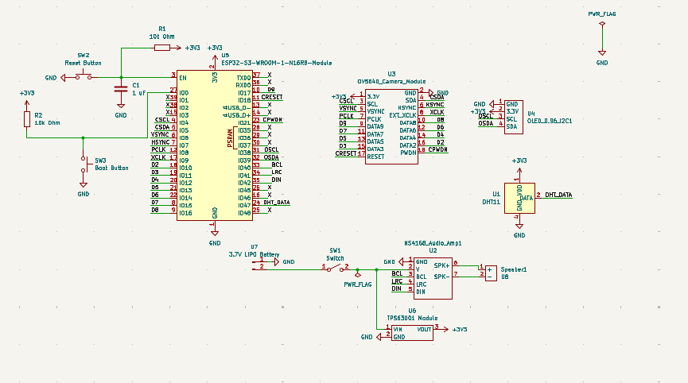
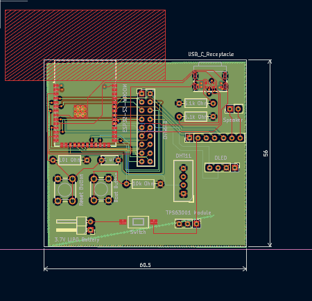
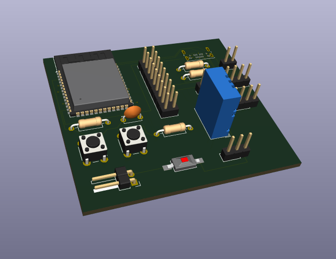
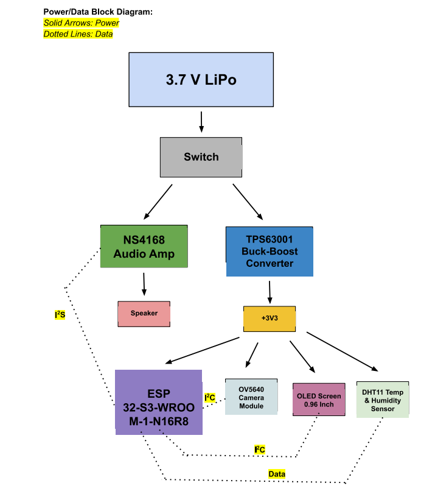
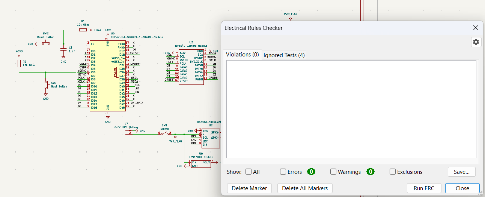
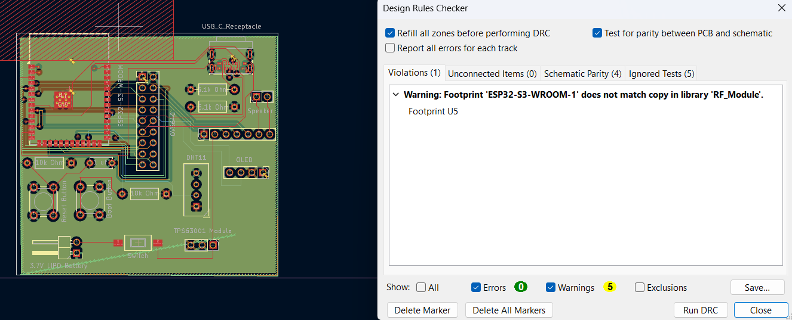

Designing a four-layer embedded platform from system architecture to PCB layout.
The goal of this project was to design a complete embedded hardware platform around the ESP32-S3 capable of supporting an edge-AI system. Rather than designing only an individual circuit, I approached the project at the system level by determining how processing, peripherals, power, communication interfaces, and user inputs would connect together.
The board integrates the ESP32-S3 with Wi-Fi capability, a camera interface, speaker output, display connectivity, power switches, and physical input buttons. I first developed the system architecture and power/data relationships before translating the design into a complete KiCad schematic.
Because several peripherals could operate simultaneously, power requirements were an important part of the design process. I performed worst-case power-budget calculations to estimate the maximum expected system current and evaluate whether the power architecture could reliably support the ESP32-S3 and connected peripherals.
After completing the schematic, I designed and routed the PCB using a four-layer stack-up. The additional internal layers allowed the board to use dedicated power and ground regions while keeping signal routing on the outer layers more organized. I completed electrical-rule and design-rule checks to verify the schematic and PCB layout before generating the final 3D board model.
From power calculations and schematic capture to a fully routed four-layer board.







Designing around worst-case system power requirements.
Before finalizing the schematic, I created a power and data architecture for the complete system. Each major subsystem was considered individually, including the ESP32-S3, camera, display, audio hardware, and other peripherals connected to the board.
I then performed worst-case power-budget calculations by considering the maximum expected current draw of the major components. This helped guide decisions around the board's power path, switching circuitry, and distribution of power to the different peripherals.
Performing the power analysis before PCB routing helped ensure that the hardware architecture was based on the electrical requirements of the complete system rather than treating the power circuitry as an afterthought.
Turning the system architecture into a complete electrical design.
I translated the system architecture into a complete schematic in KiCad, connecting the ESP32-S3 to the board's camera, display, speaker, user-interface, and power-management circuitry.
Organizing the design at the schematic level made it easier to separate the major functional blocks and understand how power and data moved throughout the system.
I used KiCad's Electrical Rules Checker to identify potential connection and electrical issues before moving into the physical PCB-layout stage.
Component placement and routing across four copper layers.
After validating the schematic, I moved into PCB layout and selected a four-layer board architecture. Components were placed based on their functional relationships, connector accessibility, and routing requirements.
I routed the board in KiCad while managing connections between the ESP32-S3 and the various peripherals. The multilayer design allowed power, ground, and signals to be distributed more efficiently than they could have been on a simpler two-layer layout.
Once routing was complete, I ran KiCad's Design Rules Checker to verify clearances, connections, and layout constraints. I then generated the board's 3D model to visually inspect component placement and the final physical design.
Designed and routed a custom four-layer ESP32-S3 PCB in KiCad for an embedded edge-AI platform, integrating Wi-Fi, camera connectivity, speaker output, display support, power switches, and input controls. Developed the system power/data architecture, performed worst-case power-budget calculations, and validated the completed schematic and PCB layout using ERC and DRC.